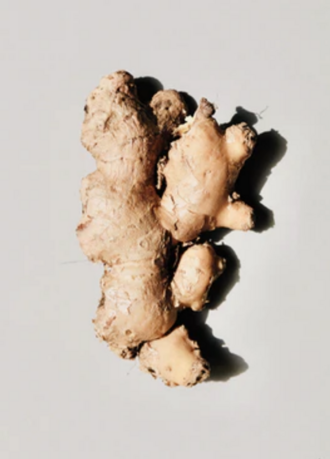

しょうがの生産量 都道府県ランキング
全11都道府県の順位と収穫量
しょうがの収穫量が全国で最も多いのは高知県で、1万8,000 tです。全国（4万900 t）の44%を占めます。

| 順位 | 都道府県 | 収穫量 | 全国に占める割合 |
|---|---|---|---|
| 1位 | 高知県 | 1万8,000 t | 44% |
| 2位 | 千葉県 | 4,630 t | 11% |
| 3位 | 熊本県 | 4,030 t | 9.9% |
| 4位 | 茨城県 | 2,410 t | 5.9% |
| 5位 | 宮崎県 | 2,200 t | 5.4% |
| 6位 | 鹿児島県 | 1,530 t | 3.7% |
| 7位 | 長崎県 | 1,440 t | 3.5% |
| 8位 | 静岡県 | 1,280 t | 3.1% |
| 9位 | 愛知県 | 378 t | 0.9% |
| 10位 | 徳島県 | 248 t | 0.6% |
| 11位 | 岡山県 | 135 t | 0.3% |
しょうがの生産量の推移（令和2年産〜令和6年産）
全国の収穫量は、令和2年産の4万4,700 tから令和6年産の4万900 tへ、9%減りました。期間中、1位は一貫して高知県です。
| 年 | 全国 | 1位 | 2位 | 3位 |
|---|---|---|---|---|
| 令和6年産 | 4万900 t | 高知県1万8,000 t | 千葉県4,630 t | 熊本県4,030 t |
| 令和5年産 | 4万5,600 t | 高知県1万9,600 t | 熊本県4,890 t | 千葉県4,860 t |
| 令和4年産 | 4万6,200 t | 高知県2万500 t | 熊本県5,260 t | 千葉県4,900 t |
| 令和3年産 | 4万8,500 t | 高知県1万9,900 t | 熊本県5,230 t | 千葉県5,050 t |
| 令和2年産 | 4万4,700 t | 高知県1万7,600 t | 熊本県4,850 t | 千葉県4,840 t |
この数字について
- 分類：ショウガ科
- 全国の収穫量：4万900 t
- この数字が表すもの：収穫量（収穫された重量）
- 調査：作物統計調査 作況調査（野菜） 令和6年産
- 11県分を調査（調査していない県は順位に入りません）
しょうがの生産量について、よくある質問
- しょうがの生産量が日本一の都道府県はどこですか？
- 高知県です。作物統計調査 作況調査（野菜）（令和6年産）で1万8,000 tでした。
- しょうがの生産量ランキング2位・3位はどこですか？
- 2位は千葉県（4,630 t）、3位は熊本県（4,030 t）です。
- しょうがの生産量ランキング4位・5位はどこですか？
- 4位は茨城県（2,410 t）、5位は宮崎県（2,200 t）です。しょうがの全11県の順位は上の表のとおりです。
- しょうがの全国の生産量はどれくらいですか？
- 4万900 t（令和6年産）です。